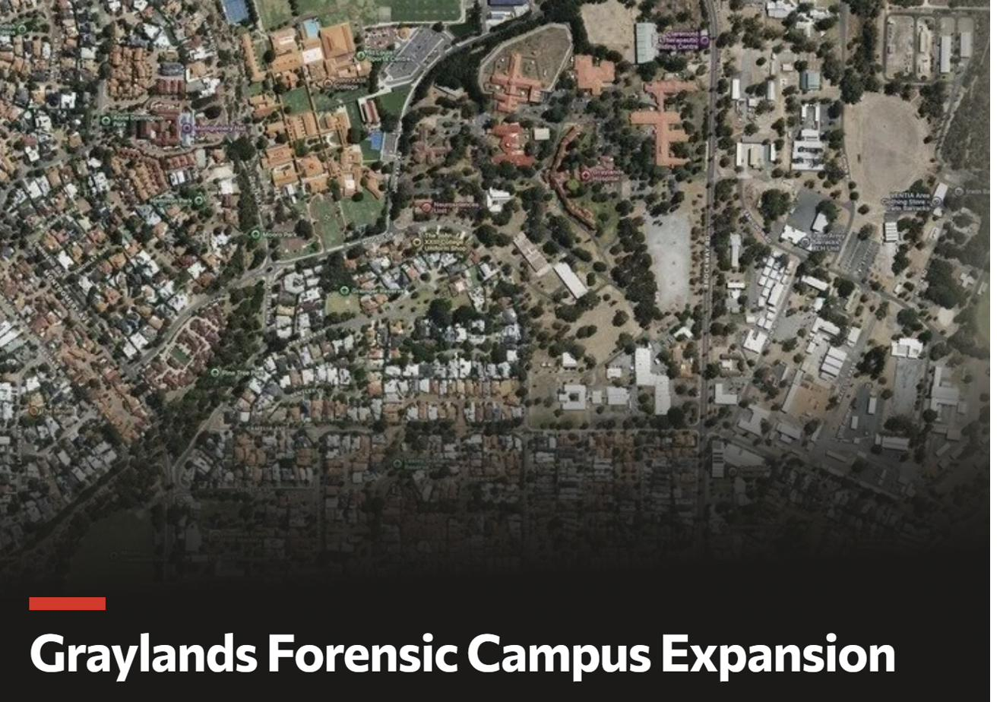

A $698 million decision the community was never shown.
The State Government is progressing a major forensic mental health expansion at Graylands, in the middle of a residential suburb. Stage 1 is already in design. Before construction proceeds, residents and school communities deserve the full evidence, the safety plan, and genuine consultation.
Sign the petition to ask the Government to pause the works, release the evidence, and consult the community properly.
- Graylands is proposed to become WA's only large-scale forensic mental health campus.
- Stage 1 would take forensic beds from about 45 to about 85.
- The long-term plan is 136 forensic beds and 40 mental health recovery beds, at an estimated total capital cost of $698.3 million.
- Four schools — one just 270 metres away — sit within 1km of the campus.
- No formal public consultation with residents or schools has been identified in the public record.
- The community is asking the Government to pause, release the evidence, and consult properly before the design is locked in.
Eight documented concerns
Each one is drawn from a government document, a parliamentary record, or credible reporting — not from speculation. Tap a card for the short version, or jump straight to the full sourced case.
If these eight concerns trouble you as much as they trouble us, the petition is the fastest way to register that.
Sign the petitionLatest updates
Letters sent, replies received, campaign milestones — the short version, so you don't have to re-read the whole site to see what's new.
Loading updates…
Every claim is checkable
Wherever you see a small tag like this — Infrastructure WA, Mar 2023 — it marks a claim drawn directly from a named, publicly available source: a government report, Hansard, or credible media. The full list is on the Sources page, and every source is independently verifiable.